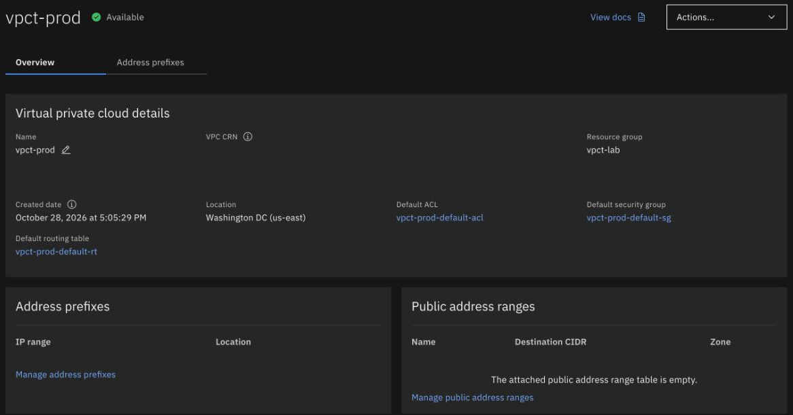

Console, CLI, Terraform and Schematics
By the end you can read a VPC in the console, run the CLI and Terraform, say what Schematics adds, and choose a way for a job.
Northgate Freight is moving its vSphere estate to IBM Cloud VPC. The company is made up; the output and screens in this unit are real. Its admins used vRealize Automation. They ask how to build and change a VPC here.
Every screenshot and line of output in this unit comes from tutorial chapters 10, 14, 15 and 20.
Read the VPC in the console
The console is one way in. This is the overview page of vpct-prod, the VPC chapter 20 creates with the CLI. In the console, go to Infrastructure, then Network, then VPCs. The page shows the same facts the CLI printed. Click where you would click.

Which resource group is this VPC in?
Show where
Right. vpct-lab, at the top right of the details panel.
Open the default security group that IBM created with the VPC.
Show where
Right. vpct-prod-default-sg. The name is the one chapter 20 gave it. The default ACL and the default routing table are linked beside it.
One panel has no rows. Which one, and why?
Show where
Right. Address prefixes. The VPC was created with manual address prefix management, so IBM created none. Chapter 21 adds them.
The console also shows the VPC CRN, which holds your account ID. Chapter 20 says to hide it before you share a screenshot. It is hidden here.
The CLI
The CLI is how the chapters create and read everything. Run each command in turn. The output is from chapter 10.
ibmcloud version
ibmcloud 2.48.1 (38ea1e00d-2026-10-21T16:03:06+00:00) Copyright IBM Corp. 2014, 2026
The version in the chapter's run.
The CLI has several plug-ins. Which one gives you the ibmcloud is commands?
Show the answer
The vpc-infrastructure plug-in gives the CLI its VPC commands. Run the next command to see all nine plug-ins the chapters use.
ibmcloud plugin list
Listing installed plug-ins... Plugin Name Version Status Private endpoints supported backup-recovery[br] 1.5.0 true cloud-dns-services[dns/dns-svcs] 0.8.7 true cloud-object-storage 1.11.2 true dl-cli 0.5.11 true key-protect[kp] 0.12.3 true schematics[sch] 1.12.32 true secrets-manager[sm] 2.0.20 true tg-cli[tg] 0.8.29 true vpc-infrastructure[infrastructure-service/is] 17.3.1 true
One plug-in for each service: VPC, Transit Gateway, DNS Services, Schematics and more.
The chapters log in without typing a password. Where does the CLI get the key?
Show the answer
The key goes in a private .env file that only you read, and never into git. The file is loaded into the session, then ibmcloud login reads the variable. The one-time passcode is for the first login, before the key exists.
ibmcloud login -r us-east
API endpoint: https://cloud.ibm.com Logging in with API key from environment variable... Authenticating... Retrieving API key token... OK Targeted account <redacted> (<redacted>) <-> <redacted> Targeted region us-east API endpoint: https://cloud.ibm.com Region: us-east User: <redacted> Account: <redacted> (<redacted>) <-> <redacted> Resource group: No resource group targeted, use 'ibmcloud target -g RESOURCE_GROUP'
The first line says where the key came from.
No resource group is targeted yet. Chapter 11 creates one.
A VPC written as Terraform
This is main.tf from chapter 14. It creates a small test VPC with every resource named and tagged. Select a part of the drawing to see what it does. You can also click a line.
Tags
Four user tags: project, owner, series and chapter. The owner value is your own user name, passed in as a variable.
Watch for this. Tags are visible to everyone in the account, and IBM converts uppercase characters in tags to lowercase.
Resource group
The file looks the resource group up by name and gives its ID to the VPC.
Watch for this. Without resource_group, the provider creates the VPC in the default resource group.
The VPC
address_prefix_management is manual, the same setting the CLI chapter used, so IBM creates no address prefixes. The last lines print the VPC ID.
From vSphere: Terraform and Schematics are the closest words to vRealize and Aria Automation. A rough mapping.
Default names
The provider names the three defaults in the same run as the VPC. With the CLI, vpc-create has no option for this, so chapter 20 renames each one afterwards.
Tags on the defaults
The VPC resource names the defaults but does not tag them, so a second resource tags each one by its CRN.
locals {
tags = ["project:vpc-tutorials", "owner:${var.owner}", "series:1", "chapter:14"]
}
data "ibm_resource_group" "lab" {
name = var.resource_group
}
resource "ibm_is_vpc" "test" {
name = "vpct-tf-test"
resource_group = data.ibm_resource_group.lab.id
address_prefix_management = "manual"
default_security_group_name = "vpct-tf-test-default-sg"
default_network_acl_name = "vpct-tf-test-default-acl"
default_routing_table_name = "vpct-tf-test-default-rt"
tags = local.tags
}
resource "ibm_resource_tag" "defaults" {
for_each = {
security_group = ibm_is_vpc.test.default_security_group_crn
network_acl = ibm_is_vpc.test.default_network_acl_crn
routing_table = ibm_is_vpc.test.default_routing_table_crn
}
resource_id = each.value
tags = local.tags
}
output "vpc_id" {
value = ibm_is_vpc.test.id
}
Run it with Terraform, then with Schematics
First Terraform on your own computer, from chapter 14. Then the same files in a Schematics workspace, which runs Terraform for you and keeps the state, from chapter 15.
The plan will create the VPC and tag its three defaults. How many resources does it add?
Show the answer
Four: the VPC and three tag attachments.
terraform plan -out=tf.plan
# ibm_is_vpc.test will be created
+ resource "ibm_is_vpc" "test" {
+ address_prefix_management = "manual"
+ default_network_acl_name = "vpct-tf-test-default-acl"
+ default_routing_table_name = "vpct-tf-test-default-rt"
+ default_security_group_name = "vpct-tf-test-default-sg"
+ name = "vpct-tf-test"
+ resource_group = "<resource-group-id>"
+ tags = [
+ "chapter:14",
+ "owner:<your-user-name>",
+ "project:vpc-tutorials",
+ "series:1",
]
...
}
Plan: 4 to add, 0 to change, 0 to destroy.
terraform apply tf.plan
ibm_is_vpc.test: Creating... ibm_is_vpc.test: Creation complete after 32s [id=<vpc-id>] ibm_resource_tag.defaults["routing_table"]: Creating... ibm_resource_tag.defaults["security_group"]: Creating... ibm_resource_tag.defaults["network_acl"]: Creating... ibm_resource_tag.defaults["security_group"]: Creation complete after 5s [id=<crn>] ibm_resource_tag.defaults["network_acl"]: Creation complete after 5s [id=<crn>] ibm_resource_tag.defaults["routing_table"]: Creation complete after 9s [id=<crn>] Apply complete! Resources: 4 added, 0 changed, 0 destroyed. Outputs: vpc_id = "<vpc-id>"
The VPC took 32 seconds in this run. The tags came after it.
You run terraform plan again straight after. What does it say?
Show the answer
Chapter 14 records No changes. Your infrastructure matches the configuration. The plan finds nothing to change.
terraform plan
No changes. Your infrastructure matches the configuration.
# the files go in as a tar file
ibmcloud schematics workspace upload --id "$WS" --template "$TID" --file tf-test.tar
Uploading tar file to workspace... ID <template-id> File Name tf-test.tar Upload Status true OK
Upload Status true. Schematics now scans the files.
You run ibmcloud schematics plan --id "$WS" at once. What happens?
Show the answer
The upload scan is still running. The chapter records statuscode: 409 and The workspace was temporarily locked. Wait until the status is INACTIVE, then run the plan again.
ibmcloud schematics plan --id "$WS"
statuscode: 409 The workspace was temporarily locked
Chapter 15 records these two fragments in text, not the whole output.
ibmcloud schematics workspace get --id "$WS" --output json | jq -r .status
INACTIVE
INACTIVE means the scan is done.
ibmcloud schematics plan --id "$WS"
Initiating plan... Activity ID <activity-id> OK
The plan runs as a job with its own ID. Read its log for the plan line.
ibmcloud schematics logs --id "$WS" --act-id "$ACT" | grep -E 'Installed|Plan:'
<date> <time> Terraform init | - Installed ibm-cloud/ibm v2.8.1 (self-signed, key ID AAD3B791C49CC253) <date> <time> Terraform plan | Plan: 4 to add, 0 to change, 0 to destroy.
The same four resources, planned by Schematics.
Three questions
Review question from Unit 1.3. You create a VPC and name no resource group. Where does it go, and can you move it later?
Show the answer
If you do not specify a resource group, the resource is created in the Default resource group. The choice is made when the resource is created and cannot be changed afterwards.
Northgate wants its estate to run without installing Terraform on each admin's computer, with IBM Cloud keeping the state. Which way fits?
Show the answer
A Schematics workspace is Terraform run for you by IBM Cloud, which keeps the state and runs the jobs. A project manages deployable architecture instances across environments, which is a different job. The chapters use the provider through Schematics so that a reader can skip a series without installing Terraform.
A Schematics workspace has built a VPC. You delete the workspace first. What happens to the VPC?
Show the answer
IBM states that deleting a workspace does not remove the resources it manages. Run a destroy first, then delete the workspace.
You know four ways in
The console, the CLI, Terraform and Schematics reach the same VPC. A second plan finds no changes. Destroy before you delete a workspace.
Tutorial chapter 14, Creating a VPC with Terraform and the IBM Cloud provider, and chapter 15, Running Terraform in an IBM Cloud Schematics workspace, run everything you just saw. Chapter 17, Choosing how to automate IBM Cloud with Terraform, compares all five ways.